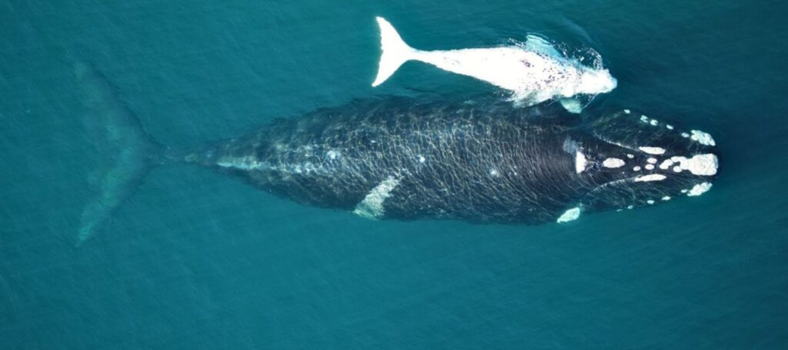
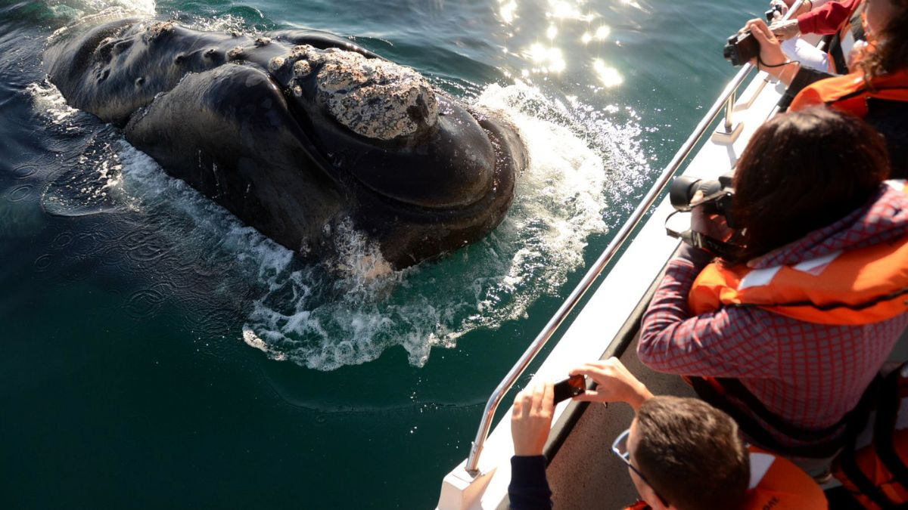
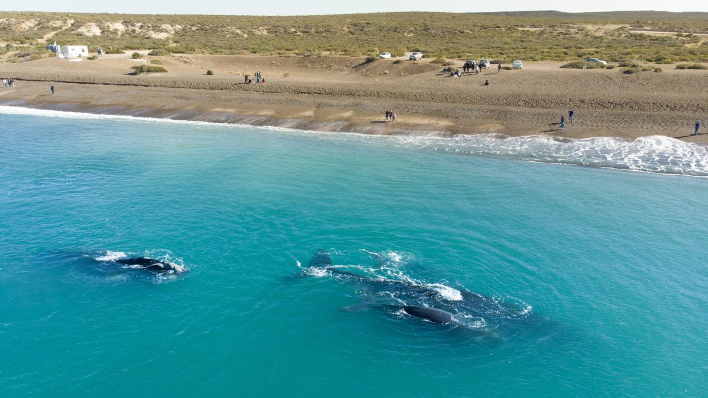
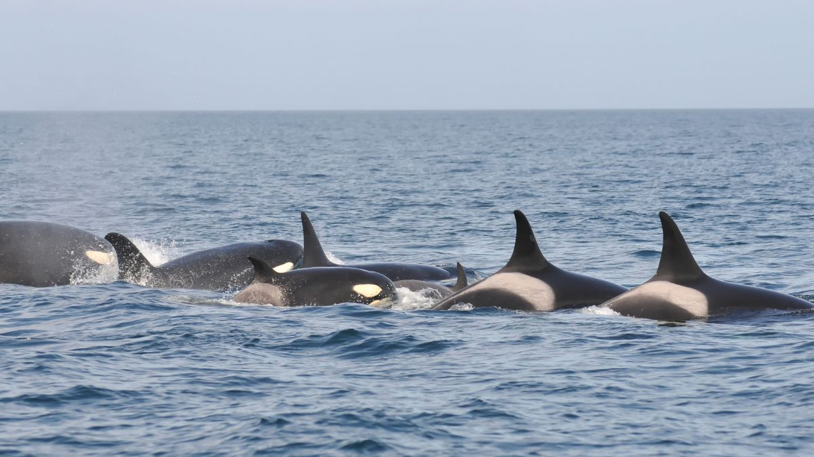
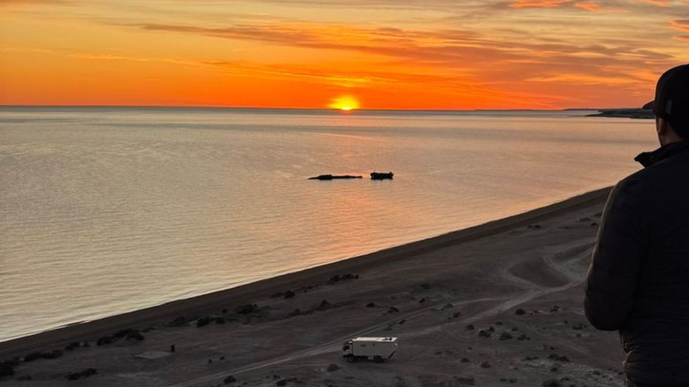
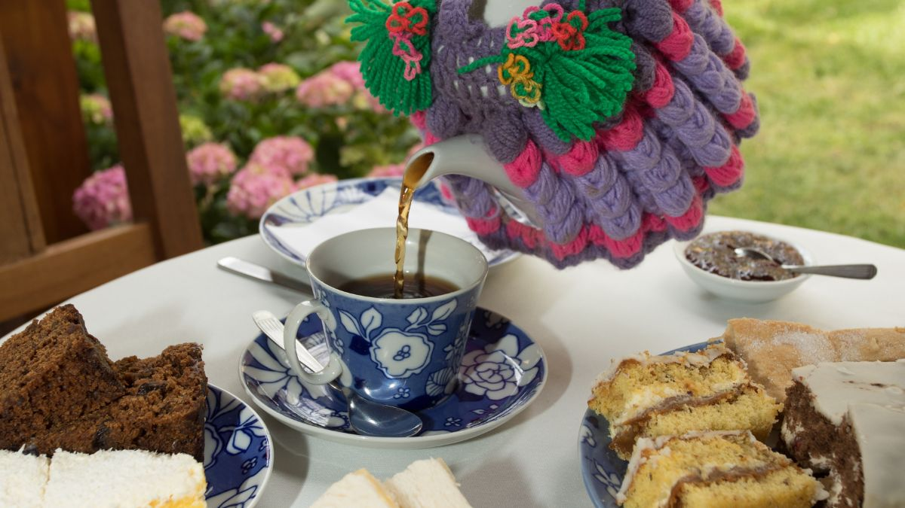
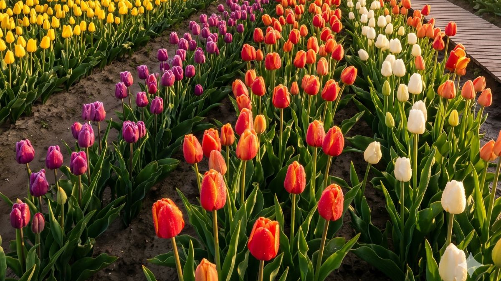
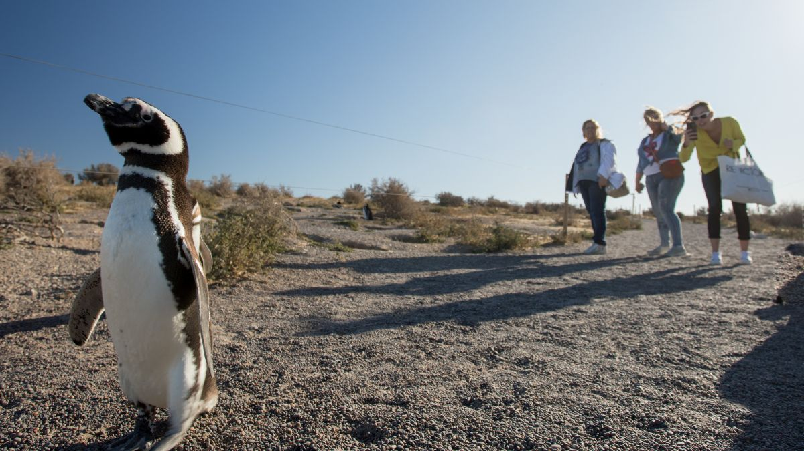

Qué ver, cuándo exactamente, y los rincones que casi nadie conoce. Ballenas, pingüinos, dinosaurios, té galés y tulipanes: todos los destinos, un solo viaje.

Península Valdés no es un lugar. Es un calendario.
La misma playa que en octubre te muestra ballenas con crías, en febrero te muestra orcas cazando. Y si venís en el mes que no es, te perdés justo lo que viniste a ver.
Esta guía existe para que eso no te pase.
Y si no querés armarlo vos, más abajo te presentamos a AIKE: la IA que te arma el viaje entero en 2 minutos.
Cuándo está cada especie. Elegí tu fecha según lo que quieras ver, no al revés.
Si podés elegir: fines de septiembre a mediados de noviembre. Es la única época del año en que coinciden ballenas, pingüinos, elefantes marinos y —con suerte— orcas. Todo junto, en el mismo viaje.
Y este año, más todavía: desde septiembre florecen por primera vez los tulipanes de 28 de Julio. Ballenas y tulipanes en el mismo viaje: hasta 2026, imposible.
Para eso está AIKE.
AIKE es una inteligencia artificial que arma tu viaje a la Patagonia en 2 minutos. No es un chat de soporte ni un formulario: le contás cómo viajás y te devuelve un itinerario completo, hecho a tu medida.
Le decís cuándo venís, cuántos días y con quién (en familia, en pareja, con amigos).
AIKE cruza tu fecha con el calendario de fauna y la disponibilidad real de las excursiones.
Te arma el itinerario día por día, con lo que sí vas a poder ver — y lo reservás ahí mismo.
La diferencia: AIKE sabe en qué mes estás. No te va a ofrecer ballenas en febrero ni pingüinos en julio. Te arma el viaje que realmente podés hacer en tus fechas.
Armar mi viaje con AIKE
El único punto de salida de los barcos dentro del área protegida. Las ballenas se acercan solas: no las persiguen, ellas vienen. Escuchás su respiración antes de verlas.
Ver excursiones de avistaje
El milagro: ballenas a pocos metros de la orilla, sin subir a ningún barco. Es gratis y es uno de los pocos lugares del mundo donde pasa. (Ojo con el horario — abajo te lo explicamos.)
Ver excursiones a El Doradillo
Donde las orcas hacen lo que no hacen en ningún otro lado del planeta: vararse a propósito en la playa para cazar. Una conducta única en el mundo.
Ver excursión a Península ValdésPasarelas sobre los acantilados con colonias de elefantes marinos abajo. Los machos adultos superan los 3.000 kilos y su rugido se escucha desde arriba.
Ver excursión a Península ValdésLa puerta de entrada. La mayoría lo pasa de largo por apuro. Error: acá están los horarios de mareas y el estado real de la fauna del día. Diez minutos que te cambian el recorrido.
Ver excursión a Península ValdésDe los 12 que conocemos. Estos tres, por ahora, van de regalo.
Las ballenas se acercan a la costa con la marea alta. Si vas en marea baja, ves un mar vacío y te volvés pensando que tuviste mala suerte. No fue mala suerte: fue el horario. Consultá la tabla del día antes de salir.
Son casi 400 km de ripio si querés hacerla completa. El que sale tarde termina manejando de noche por camino de ripio con fauna cruzando. Salí temprano. Los que salen al amanecer ven más animales y vuelven con luz.
Las salidas embarcadas se confirman la tarde anterior, según el viento. Por eso conviene tener el avistaje reservado con margen de días: si un día no sale, tenés otro. El que viene por 24 horas se juega todo a una carta.
La diferencia entre una foto linda y una foto que no te olvidás casi siempre es la luz. Y la luz tiene horario.

La mayoría viene por las ballenas, las ve, y se vuelve. Se pierde la otra mitad del viaje.
A menos de una hora de Puerto Madryn está el Valle Inferior del Río Chubut: Trelew, Gaiman, Rawson, Playa Unión, Dolavon. Otra Patagonia — la de los galeses, los dinosaurios y los delfines. Un día más y volvés con dos viajes en vez de uno.
En el Museo Egidio Feruglio está el Patagotitan mayorum: el dinosaurio más grande jamás encontrado, hallado acá cerca. Uno de los museos paleontológicos más importantes de Sudamérica.
Ver excursiones en Trelew
Un pueblo galés en plena Patagonia, con sus casas de ladrillo y sus casas de té. La torta negra galesa se sigue haciendo con la receta que trajeron en 1865.
Ver excursiones a GaimanDelfines blancos y negros que juegan alrededor de las lanchas. Salen desde el puerto de Rawson y suelen acompañar la embarcación. Mejor época: verano (noviembre a marzo).
Ver avistaje de toninasEl pueblo más agrícola del valle, con sus viejas norias de madera todavía girando sobre el canal. Pocos turistas, mucha Patagonia real.
Ver excursiones por el Valle
La primicia de esta primavera: el segundo campo de tulipanes de Chubut, de la misma familia que el mítico campo de Trevelin, abre por primera vez en el km 82 de la Ruta 25, a orillas del río Chubut.
El dato que cambia todo: por el clima costero, acá florece antes que Trevelin — en septiembre. Es decir, coincide con la temporada de ballenas. Podés ver ballenas a la mañana y tulipanes a la tarde, algo que hasta este año era imposible.
Ver excursión a los tulipanes
La colonia de pingüinos de Magallanes más grande del continente: más de 500.000 llegan cada año. Caminás por senderos entre los nidos, con los pingüinos cruzando a centímetros tuyos.
Cuándo: de mediados de septiembre a mediados de abril. Está al sur de Trelew, y se combina perfecto con el Valle en el mismo día.
Ver excursiones a Punta TomboDía 1: Península Valdés. Día 2: El Doradillo temprano (marea alta) y el Valle a la tarde. Día 3 (primavera): Punta Tombo y los tulipanes. Tres días y te llevás toda la Patagonia costera, en vez de correr y perderte la mitad.
No somos una web de turismo. Somos tres piezas que trabajan juntas para que tu viaje salga bien de punta a punta.
Historias, destinos y secretos de la Patagonia real. Esta guía que estás leyendo nació acá.
La plataforma donde reservás excursiones y alojamiento, con los mejores precios y prestadores verificados.
La inteligencia artificial que arma tu itinerario en 2 minutos, según tus fechas y cómo viajás. Es lo que ninguna otra plataforma de la Patagonia tiene.
Cada reserva, cada noche, cada comida en la red te suma puntos que se convierten en beneficios en toda la Patagonia. El viaje que te premia.
El circuito completo: te inspirás en Magazine → AIKE te arma el viaje → lo reservás en Experiencias → sumás beneficios con Puntos → volvés.
Ninguna otra plataforma de la Patagonia te da las tres cosas.
Esta es la versión libre. La completa tiene:
Las ballenas están acá hasta diciembre. En septiembre florecen los tulipanes. Y todo lo reservás en un solo lugar.
AIKE te arma el itinerario en 2 minutos, gratis.